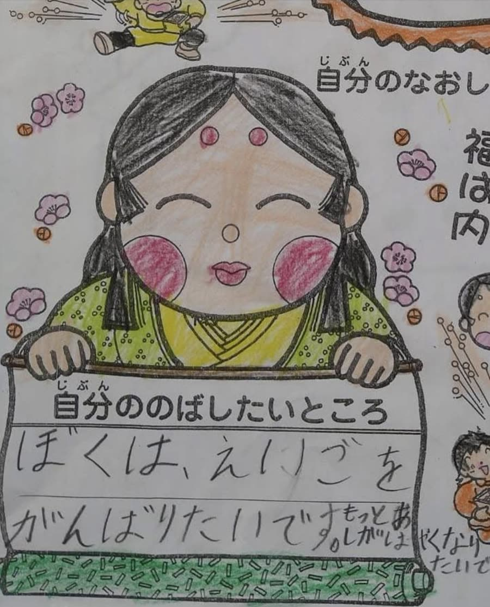

オキラジ 85.4MHz
毎週金曜日 18:00〜18:55
Service
歌、演奏、ラジオ、英語。4つのかたちで、みなさまのところへうかがいます。
What I Do

地域のお祭り、企業の催し、子ども向けの企画、施設でのイベントなど。80年代のアイドルの曲を中心に、その場のみなさまに合わせて曲を選びます。聴くだけでなく、一緒に歌ったり手拍子をしたりできる時間をおつくりします。

ウクレレと、沖縄生まれのサンレレ。やわらかい音色は、小さなお子さんからご年配の方までよく届きます。シマ歌の弾き語りもいたします。音を大きく出せない会場でも承ります。

パーソナリティとして番組を担当しています。ゲストのお話を引き出すこと、沖縄の音楽やイベントを紹介することが得意です。各分野でご活躍のみなさまや、地域のお店・事業者の方をゲストにお招きし、活動への想いをじっくり伺っています。番組へのご出演のご相談も承ります。

遊びながら音から入って、いつのまにか読めるようになる進め方です。外国の教材やカード遊びから始め、読み書き、そして英検の対策へつなげます。ご家庭でのレッスンと、園でのレッスンをしています。
3つの局で番組を担当しています。周波数を合わせて、お聴きいただけましたら嬉しいです。
毎週金曜日 18:00〜18:55
毎週金曜日 13:00〜13:55
第2土曜日 20:00〜20:55
Flow
公式LINEかお問い合わせフォームから、日にちと場所、どんな会かをお知らせください。まだ決まっていない段階でも構いません。
時間の長さ、曲のご希望、楽器を使うかどうかなどを一緒に決めます。会場の音の設備もこの段階で確認します。
お約束の時間にうかがい、歌わせていただきます。終わりましたら、写真やご感想もぜひお聞かせください。
For Fans
出演の予定や、次にどこで歌うかは、公式LINEでお知らせしています。
ファンクラブはどなたでもご入会いただけます。ライブのお席は、仮のお申し込みをいただいたあと、折り返しのご連絡で確定いたします。